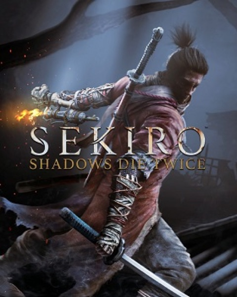

Action · 2019
Sekiro: Shadows Die Twice
Swordplay as rhythm: deflect, posture, break. No build to hide behind.

Cover: Wikipedia: Sekiro: Shadows Die Twice
Facts
- Released
- 2019-03-22
- Genre
- Action
- Category
- Action
- Platforms
- PC, PlayStation, Xbox
- Developers
- FromSoftware, Yoshitaka Suzuki
- Publishers
- Activision, Cubejoy, FromSoftware
PC requirements
- Minimum
- [object Object]
- Recommended
- [object Object]